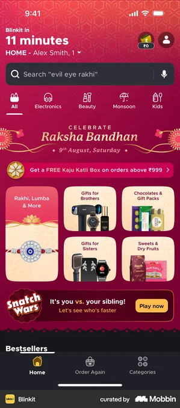

Home’s front door surfaces one live moment in the hero slot — a darshan, a match, a festival, a morning brief — and its action deep-links into the matching Space. But on a big day (say Diwali) several moments are live at once. These four representations show how the state behaves with one moment and with four.
The tension: the front-door principle is “one live moment, never a feed.” The question is what happens to the other three when they’re all live — do they vanish, get acknowledged, or compete?
← See the companion study: pending tasks (1 vs many)
What the prototype ships today: one moment wins the hero slot, rendered rich (festive kicker, LIVE badge, deep-link CTA). With four live, priority picks one — the rest aren’t shown.
Keep one hero moment, but add a compact row of pills for the others. Tap a pill to promote it into the hero. One focus, but nothing is hidden — and switching is one tap.
Treat live moments as peers in a labelled, swipeable rail — each a mini card with its badge and CTA. Best when two moments are equally urgent and no single one should dominate.
A thin “● N happening now” strip sits above the hero and expands to the full list. Keeps a single hero moment while signalling how much else is live right now.
Real screens behind the four options, grouped by pattern. Two questions drove the scan: how apps stage one live moment for maximum pull, and how they surface several live at once without becoming a feed. Each shot links to its Mobbin source.
The consistent move for a single live moment: full-bleed imagery, a red LIVE badge, a live viewer count, and one watch/join CTA. This is JBIQ’s current moment card, dialled up.
Several live things laid out as equal cards in a labelled, horizontally-scrolling row — no single one dominates.
Sports apps compress a live event into a tight score card: teams, live score, LIVE + game state. Directly reusable for JBIQ’s cricket moment, and the model for the strip’s expanded rows.
On a big cultural day, apps re-skin the whole surface around the moment. This is how the Diwali framing should feel — theming the hero, not just labelling it.

The most compressed signal — a “Live” tab, a red dot, or a “LIVE now” pill telling you something’s on without spending hero space. Good as a secondary indicator.